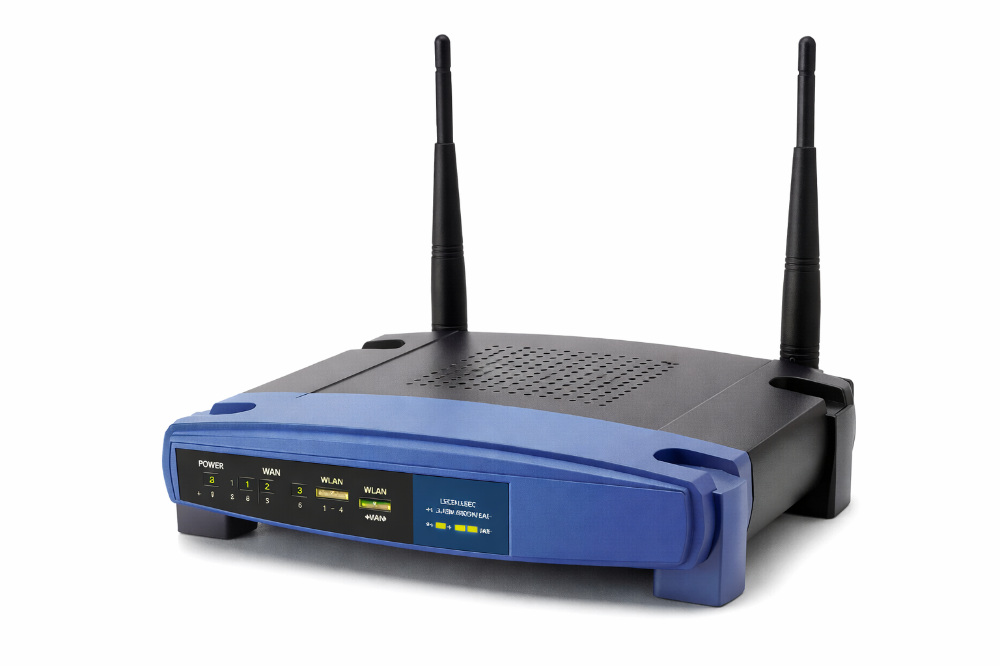

Identitas Pembuat
Nama: Hafid Pramudya Elza
NIM: 607012500021
Kelas: D3SI-49-01
Foto Mahasiswa
Foto diambil saat kegiatan bebas mahasiswa.
Mata Kuliah
Jaringan Komputer
Perangkat Jaringan Komputer
Router (Perangkat Perantara)
Fungsi: Router berfungsi untuk menghubungkan dua atau lebih jaringan yang berbeda dan mengatur lalu lintas data.
Jenis:
- Router Kabel
- Router Wireless
Sumber: https://www.cisco.com